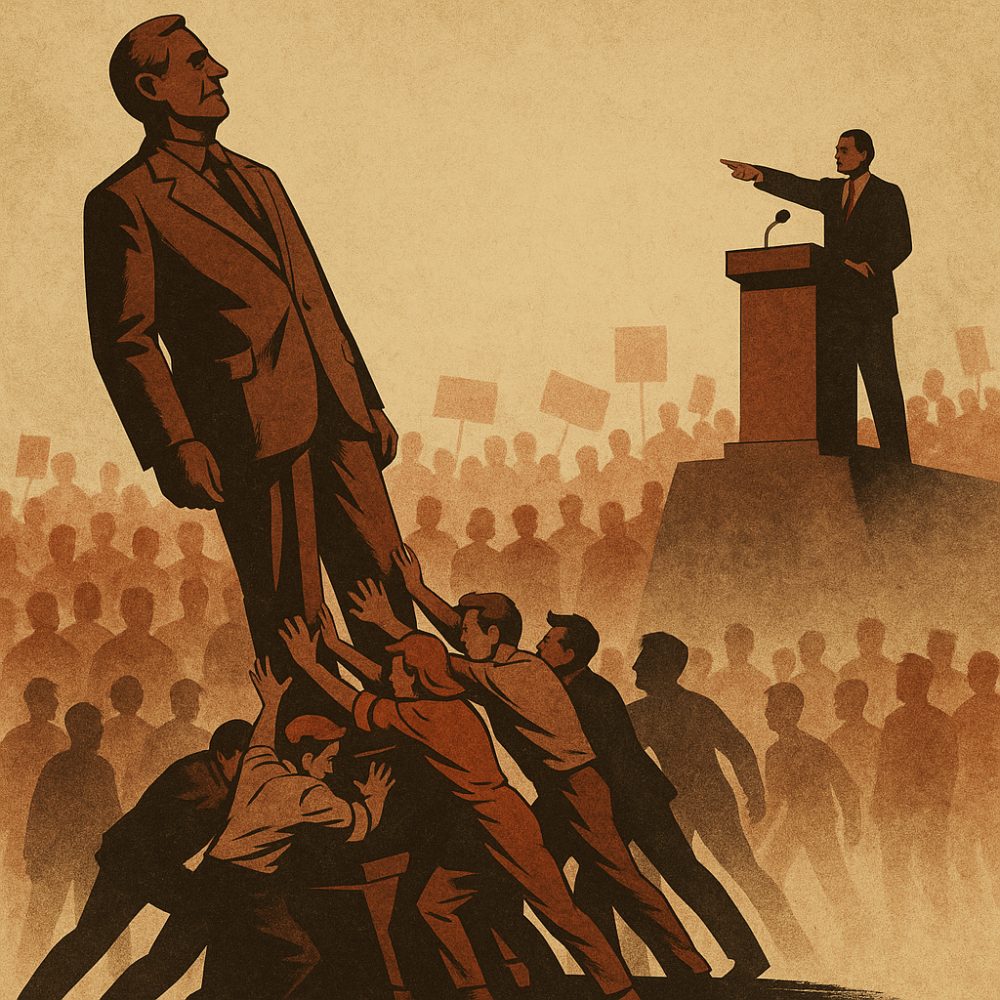

Publicado em 2025-05-14 09:27:00
A democracia direta, em teoria, deveria ser o corolário natural de qualquer regime verdadeiramente democrático. Um sistema onde o povo, soberano por definição, tem voz ativa nas decisões estruturantes que moldam a sua vida coletiva. No entanto, na prática, a simples menção de democracia direta provoca arrepios nas espinhas dos que detêm o poder. E não são apenas os ditadores: também os democratas profissionais, os partidos instituídos, os comentadores permanentes e os gestores da opinião pública.
Porquê? Porque a democracia direta rompe com o círculo fechado da representação. Ela dispensa intermediários, expõe os bastidores do poder e obriga os decisores a ouvir o que preferiam ignorar. Pior: coloca o povo a decidir em vez de apenas escolher quem decide por ele. E isso é visto como uma afronta por um sistema que se sustenta na mediação, na opacidade e na concentração do poder.
Os partidos perdem centralidade. Os lóbis perdem influência. Os bastidores perdem eficácia. Os comentadores perdem autoridade. Os dirigentes perdem margem de manobra. Tudo o que sustenta a democracia representativa profissionalizada estremece diante da possibilidade de uma população esclarecida decidir por si.
Por isso se diz que a democracia direta é "perigosa", "populista", "caótica". É o medo a falar mascarado de razoabilidade. Mas o verdadeiro medo não é o do caos — é o do fim do privilégio. Porque onde há democracia direta, há menos margem para manipulação, menos espaço para acordos de bastidores, menos oportunidades para enriquecer à sombra do voto.
A democracia direta não é perfeita. Nenhum sistema o é. Mas é infinitamente mais honesta. Mais responsável. Mais participativa. E, sobretudo, mais fiel ao princípio fundacional da democracia: o poder pertence ao povo.
Chegará o dia em que as sociedades, cansadas de serem espectadores, reclamarão o seu lugar no palco. E então, os senhores do poder terão de escolher: ou partilham o poder, ou verão o sistema ruir de dentro.
A democracia direta não é um perigo. É uma promessa ainda por cumprir.
Artigo da autoria de Augustus Veritas Lumen